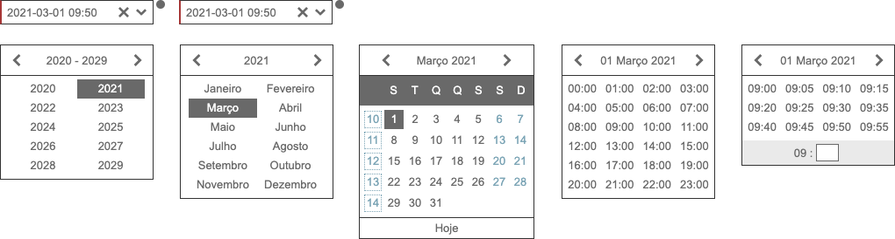

Date Time¶
Este componente selecciona uma data ou data/hora.
Requisitos¶
/framework/components/datetime.js |
|
/framework/components/shared.js |
JS Shared |
Note
As páginas geradas por PHP PageHelper fazem, por defeito, o carregamento dos componentes necessários.
Attention
Utiliza as variáveis de sessionStorage:
language e date_format (exemplos: “en_US”, “d-m-y”).A ordem de utilização para as 2 variáveis é:
- Atributo no html (tag);
- Variável
languagede sessionStorage; - “pt_PT”.
- Atributo no html (tag);
- Variável
date_formatde sessionStorage; - “y-m-d”.
Html do componente (tag)¶
<fwk-datetime>
<span slot="information">texto</span>
</fwk-datetime>
| Atributo | Descrição | Obrigatório | Opções | Default |
|---|---|---|---|---|
id |
Identificador único do componente | Sim (?) | ||
placeholder |
Placeholer do componente | Não | ||
week |
Com número de semana | Não | “true”, “false” | “false” |
time |
Com Hora | Não | “true”, “false” | “false” |
value |
Valor inicial | Não | ||
language |
Idioma | Não | “pt_PT”, “es_ES”,
“fr_FR”, “en_US”
|
Variável
language de sessionStorageou “pt_PT”
|
format |
Formato de data | Não | ‘y-m-d’, ‘d-m-y’,
‘y/m/d’, ‘d/m/y’
|
Variável
date_format de sessionStorageou “y-m-d”
|
mandatory |
Selecção obrigatória | Não | “true”, “false” | “false” |
disable |
Inibe componente | Não | “true”, “false” | “false” |
hide |
Esconde componente | Não | “true”, “false” | “false” |
width |
Largura do componente | Não | “175” | |
color |
Cor base do componente | Não | “blue”, “gray” | “gray” |
tooltip-position |
Posição do tooltip | Não | “left”, “right” | “right” |
Important
O atributo id só é obrigatório no caso de ser necessária a identificação do componente para interacção com qualquer uma das suas funcionalidades.
O atributo value, independentemente do formato mostrado, internamente utiliza o formato yyyy-mm-dd hh:mm.
| Slot | Descrição | Obrigatório | Observações |
|---|---|---|---|
information |
Tooltip de informação | Não | Admite html |
Funcionalidades¶
Assumindo que exite um objecto instanciado com o componente:
const obj_datetime = FormHelper.getComponent('fwk_datetime');
Atribuir valor¶
obj_datetime.value = 'yyyy-mm-dd' / 'yyyy-mm-dd hh:mm' / '';
Ler valor¶
let datetime = obj_datetime.datetime;
let date = obj_datetime.date;
let year = obj_datetime.year
let month = obj_datetime.month
let day = obj_datetime.day
let time = obj_datetime.time
let hour = obj_datetime.hour
let minute = obj_datetime.minute
Atribuir / cancelar obrigatoriedade¶
obj_datetime.mandatory = true;
obj_datetime.mandatory = false;
Mostrar / esconder¶
obj_datetime.hide = false;
obj_datetime.hide = true;
Habilitar / inibir¶
obj_datetime.disable = false;
obj_datetime.disable = true;
Atribuir erro¶
obj_datetime.error = true; (apenas sinalizador)
obj_datetime.error = '???? \n ???';
Cancelar erro¶
obj_datetime.error = false;
Ler estados¶
let is_hide = obj_datetime.hide;
let is_disable = obj_datetime.disable;
let is_mandatory = obj_datetime.mandatory;
let has_error = obj_datetime.error;
Referências¶
JS Form Helper é uma classe de auxílio às operações sobre formulários.